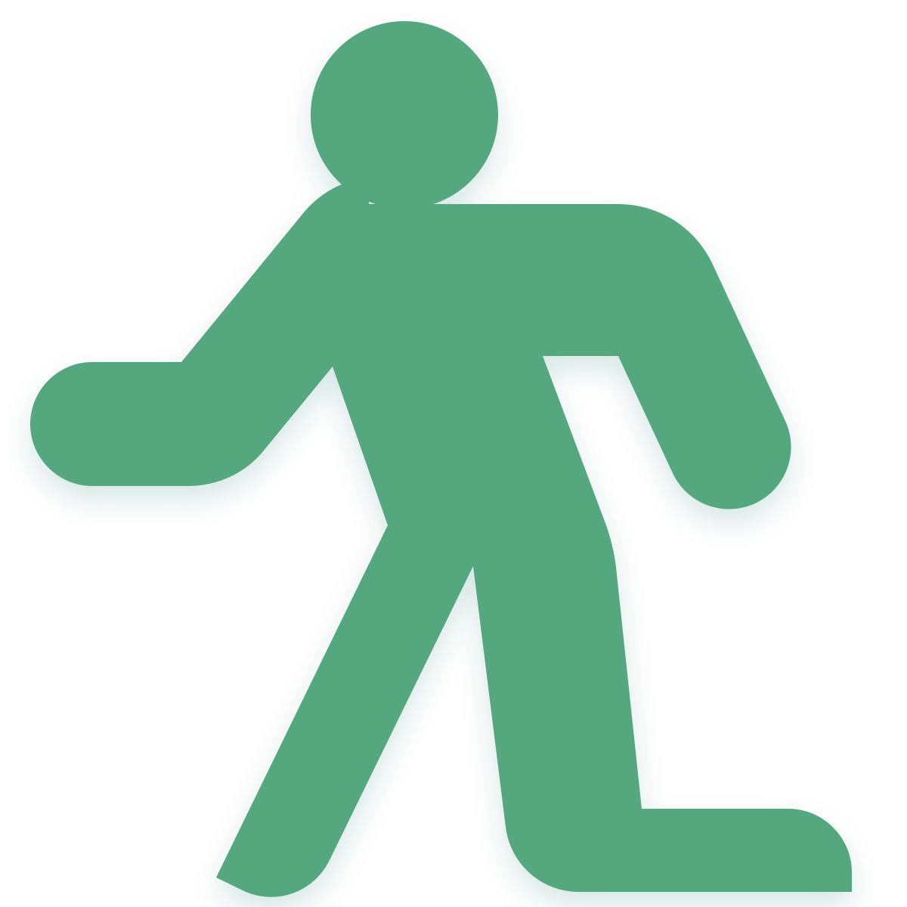
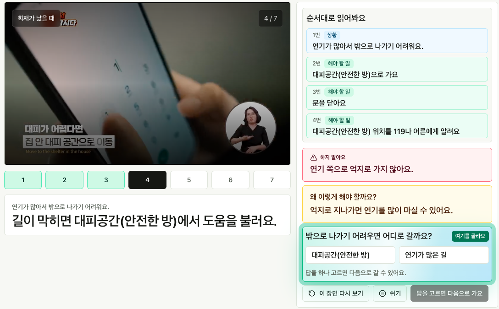
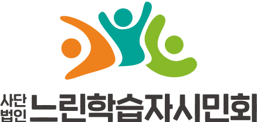

IQ 71~84경계선 지능인
13.59%한국인의 7명 중 1명
약 700만 명전체 인구 중 추정 규모
약 78만 명초·중·고 학생 규모
느린학습자의 안전한 라이프를 위한

긴 설명 대신, 한 장면 · 한 행동 · 한 질문으로 익히는 재난안전 학습 Agent
지적장애 판정은 아니지만, 정보를 이해하고 행동으로 옮기는 데
더 많은 시간과 반복 연습이 필요한 학습자입니다.
13.59%한국인의 7명 중 1명
약 700만 명전체 인구 중 추정 규모
약 78만 명초·중·고 학생 규모
국회 입법 11회 시도, 전부 실패
조례·교육청 사업은 지역과 시기별로 끊깁니다.
재난 시의 어떤 행동을 해야 하는 지 어려워합니다.
빠른 장면전환, 너무 많은 자막과 음성 때문에
느린학습자가 행동요령을 익힐 수 없습니다.
공공 재난안전 영상을 쉬운말·행동 카드·확인 질문으로 바꿔, 느린학습자도 이해할 수 있는 학습자료를 만듭니다.
재난 안전 영상을 업로드 하면,
AI 에이전트들이 재난 시 행동요령을 장면별로 나누고,
느린학습자가 이해할 수 있는 학습자료로 재구성합니다.

입력 신호 동기화프레임·ASR·OCR·컷 변화를 같은 시간축에 정렬
후보 분리 계약상황·해야 할 일·이유·금지행동·퀴즈 후보 분리
Atomic Scene관련 행위 근거만 남기고 시간 경계 축소
한 장면 = 한 판단 주제로 고정합니다.
Hazard/Topic 스키마재난 유형을 먼저 고정
Semantic Rule Match공식 행동요령과 의미 일치 확인
Grounded Output근거 ID 안내만 공개
Ungrounded Block근거 없으면 수리/차단
근거 ID가 붙은 행동 · 이유 · 하지 말아요 · 확인 질문만 공개합니다.
공식 RAG 근거 없는 행동은 학습 화면에 올라가지 못합니다.
Before폭염 발생 시 야외활동을 자제하고 충분한 수분을 섭취합니다.
↓After너무 더우면 밖에 오래 있지 않아요.
물을 마시고 그늘에서 쉬어요.
Easy Read 출력 스키마를 통과한 문장만 학습카드가 됩니다.
실패하면 끝이 아니라 needs_repair 상태로 자동 수리 루프에 들어갑니다.
관련 기관들과 협력하고, 느린학습자와 전문가에게 직접 검증받았습니다.

국내 최대규모 느린학습자를 위한 공익단체
국내 최초 느린학습자 청소년 교육전문기관